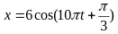
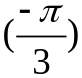

PHẦN I. Câu trắc nghiệm nhiều phương án lựa chọn
Mỗi câu có 4 phương án, chỉ chọn một đáp án đúng (0,25 điểm).
1
Một chất điểm dao động điều hoà trong 10 dao động toàn phần đi được quãng đường dài 120 cm. Quỹ đạo của dao động có chiều dài là
2
Một chất điểm dao động điều hòa với phương trình $x=5\cos\left(10\pi t+\frac{\pi}{3}\right)$ (cm). Li độ của vật khi pha dao động bằng $\pi$ là:
3
Một vật dao động điều hòa có phương trình $x=5\cos\left(10\pi t+\frac{\pi}{3}\right)$ (cm). Pha dao động của vật ở thời điểm t = 0,2 giây là
4
Cho vật dao động điều hòa có li độ $x=4\cos\left(\pi t+\frac{\pi}{4}\right)$ (cm). Li độ của vật lúc t = 0,5 giây là
5
Một vật dao động điều hoà theo phương trình $x=-4\sin(5\pi t-\pi/3)$ cm. Biên độ dao động và pha ban đầu của vật là
6
Chất điểm dao động điều hoà với phương trình $x=6\cos(10t-3\pi/2)$ cm. Li độ của chất điểm khi pha dao động bằng $2\pi/3$ là
7
Chất điểm dao động điều hòa với phương trình $x=6\cos(10t-\pi)$ (cm). Li độ của chất điểm khi pha dao động bằng $\frac{2\pi}{3}$ là
8
Một vật dao động điều hòa theo phương trình $x=-5\sin(5\pi t-\pi/6)$ cm. Biên độ dao động và pha ban đầu của vật là
9
Một chất điểm dao động điều hòa trên trục Ox có phương trình $x=8\cos\left(\pi t+\frac{\pi}{4}\right)$ ($x$: cm, $t$: s) thì
10
Một vật dao động điều hoà theo phương trình x = 4cos(5πt + ) cm. Số dao động trong 2 s là
11
Một vật dao động điều hòa có phương trình $x=2\cos\left(2\pi t-\frac{\pi}{6}\right)$ (cm, s). Li độ của vật tại thời điểm $t=0{,}25$ s là
12
Chất điểm dao động điều hòa với phương trình $x = 6\cos(10t - 3\pi/2)$ cm. Li độ của chất điểm khi pha dao động bằng $2\pi/3$ là
13
Một chất điểm dao động điều hoà trong 10 dao động toàn phần chất điểm đi được quãng đường dài 120 cm. Quỹ đạo dao động của chất điểm có chiều dài là
14
Một vật dao động điều hòa với phương trình $x=10\cos(10\pi t)$ cm. Tại thời điểm $t=0{,}25$ s thì vật có li độ là
15
Một vật dao động điều hòa theo phương trình $x=5\cos\left(10\pi t+\frac{\pi}{6}\right)$ cm. Li độ của vật vào thời điểm $t=0{,}05$ s là
16
Chất điểm dao động điều hòa với phương trình $x = 8\cos(10\pi t - \pi/3)$ cm. Chiều dài quỹ đạo của chất điểm là:
17
Một chất điểm dao động điều hòa trên trục Ox có phương trình x = 8 . Pha dao động của chất điểm khi t = 1 s là:
. Pha dao động của chất điểm khi t = 1 s là:
. Pha dao động của chất điểm khi t = 1 s là:18
Một vật dao động điều hòa theo phương trình x = 4 cm, t tính bằng giây. Thời gian vật thực hiện được một dao động toàn phần là:
cm, t tính bằng giây. Thời gian vật thực hiện được một dao động toàn phần là:
cm, t tính bằng giây. Thời gian vật thực hiện được một dao động toàn phần là:19
Vật dao động điều hoà, thời gian vật đi từ biên âm đến biên dương là 0,4 s. Chu kỳ dao động của vật là:
20
Một chất điểm dao động điều hòa với phương trình

(cm). Li độ của vật khi pha dao động bằng
là